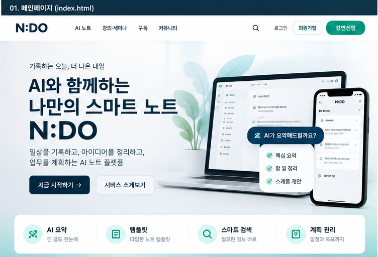
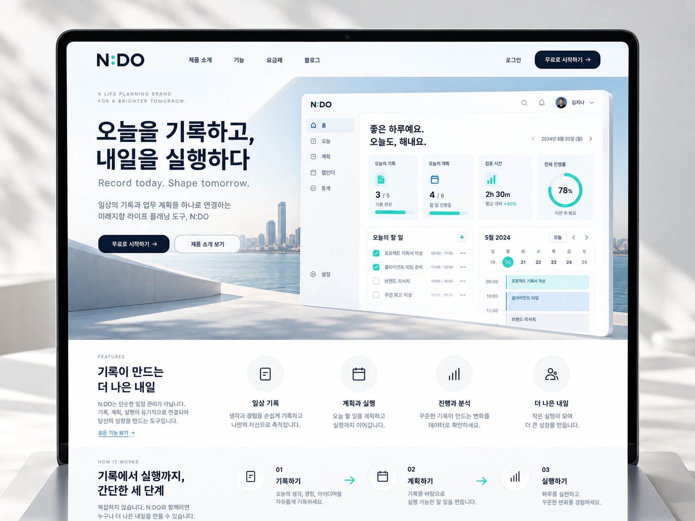

✦ AI-powered knowledge workspace N:DO AI NOTE
생각을 기록하고,
AI로 확장하다.
스쳐 지나가는 아이디어부터 일상의 기록, 업무 계획까지.
기록하고, 정리하고, 실행하는 나만의 AI 노트.
✓ 설치 없이 바로 사용✓ 브라우저 저장 데모✓ 반응형 작업공간
N:DO / Workspace LIVE PREVIEW
좋은 하루예요! 👋
오늘도 작은 기록을 큰 변화로 만들어보세요.
내 노트0저장된 기록
나의 템플릿06추천 양식
오늘의 목표01하나씩 실행
오늘의 노트↗
✦ AI로 핵심 정리해보기
이렇게 활용해요
✓ 빠르게 기록하기
✓ 핵심 정리하기
○ 아이디어 연결하기
N:DO MEMBERSHIP
AI 구독, 개인부터 기업까지.
AI 실전 콘텐츠와 스마트 템플릿을 목적에 맞게 구독하세요. 개인의 학습과 팀의 생산성을 함께 지원하는 N:DO 멤버십.
N:DO DESIGN PREVIEW
AI 노트 경험을 화면으로 만나보세요.
N:DO의 네이비·민트 브랜드를 적용한 서비스 디자인 콘셉트입니다.


ALL-IN-ONE NOTE WORKSPACE기록하는 방식이 달라지면
기록하는 방식이 달라지면
하루의 가능성도 달라집니다.
여러 도구를 오갈 필요 없이 필요한 기능을 한곳에서.
01
기록하기
아이디어와 회의 내용을 자유롭게 작성해요.
02
정리하기
핵심 내용을 뽑고 템플릿에 맞춰 정돈해요.
03
실행하기
노트를 업무와 일상 속 행동으로 연결해요.
N:DO INSIGHT LETTER
AI 트렌드부터 실전 노트 활용법까지.
매주 읽기 좋은 인사이트와 템플릿을 전해드리는 구독 콘텐츠.